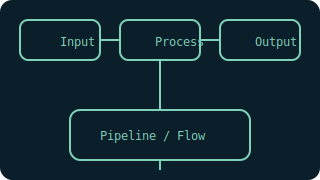

Shell 上手指南（Bash）
变量、条件与循环、函数、管线与重定向、错误处理与练习题等。

基础语法
#!/usr/bin/env bash
set -euo pipefail
# 变量与参数
name=${1:-world}
echo "hello $name"
# 条件
if [[ -f file.txt ]]; then echo "exists"; fi
# 循环
for f in *.log; do echo "$f"; done
# 函数
log(){ printf "[%s] %s\n" "$(date)" "$*"; }
常见坑
- 空格与引号：用双引号包裹变量展开，避免拆词错误。
- 管道错误：启用
set -o pipefail获取失败。 - 可移植性：避免依赖非标准工具或选项。
练习题
- 写一个“日志轮转”脚本，按大小或日期切分。
- 实现一个并发下载器，限制最大并发与重试次数。
- 写一个“文件去重”脚本，输出重复文件路径。
给完全新手：第一步怎么做
- 安装 Git Bash 或 WSL；确认
bash --version正常。 - 在工作目录创建
hello.sh，运行：bash hello.sh。 - 练习编写一个带参数的脚本，并打印日志。
- 学习
set -euo pipefail与set -x。
项目实战（入门）
- 日志转储：按大小或日期切分。
- 并发下载：
xargs -P或后台任务并发执行。 - 文件去重：比对校验和，输出重复文件列表。
中间插图

进阶内容
- trap 与清理：捕获信号并清理临时文件。
- 可测试性：将核心逻辑封装为函数，便于单测。
- 性能：避免大量
fork，优先内置与管线。
更多练习
- 实现一个并发任务调度器，记录耗时与失败重试。
- 写一个“日志收集器”，按关键字提取并输出概览。
- 封装一个简单的运维脚本：健康检查与状态自检。